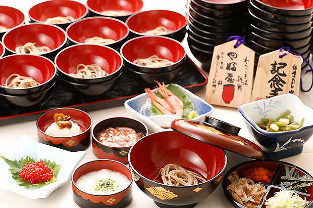
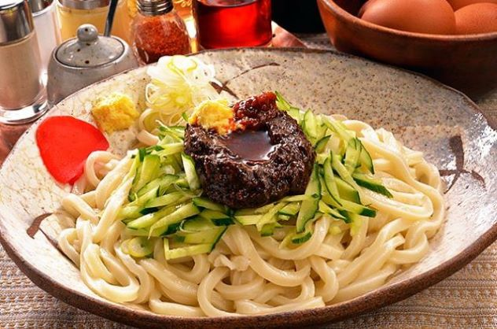
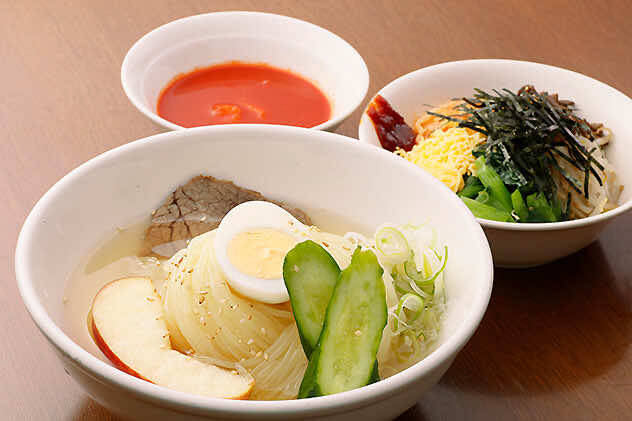

説明：宴の席で大勢のお客様をもてなすために考えられたと伝えられています。一口大の小分けにしたお蕎麦を様々な薬味と共にたっぷりと味わっていただけます。店舗によっても異なりますが15杯前後で通常のもりそば一杯分。

説明：小麦粉と馬鈴薯でん粉による強いコシの麺が独特の歯ざわりを生み出しています。スープは牛骨・鶏肉等を煮込んで味付けしております。飲み心地良くコクもたっぷりでキムチの辛さと相性ぴったりです。辛味が苦手な人でもキムチの量で辛さを調節できます。

説明：中国東北部の麺を参考に、白龍の高階貫勝さんが屋台から始めた麺です。麺と特製味噌をよく混ぜあわせ、お好みで、おろし生姜・酢・にんにく・ラー油を加えて食べてください。食べるほどにくせになる味わいです。